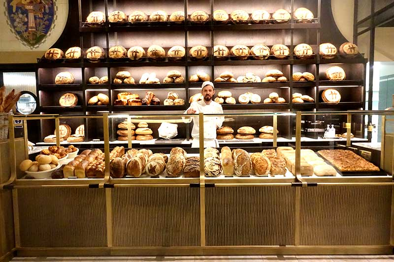
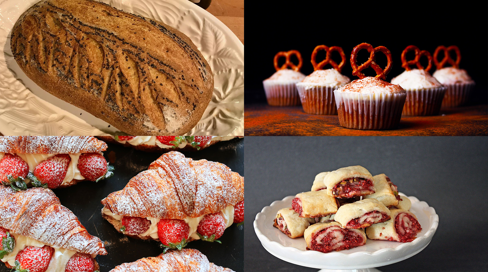
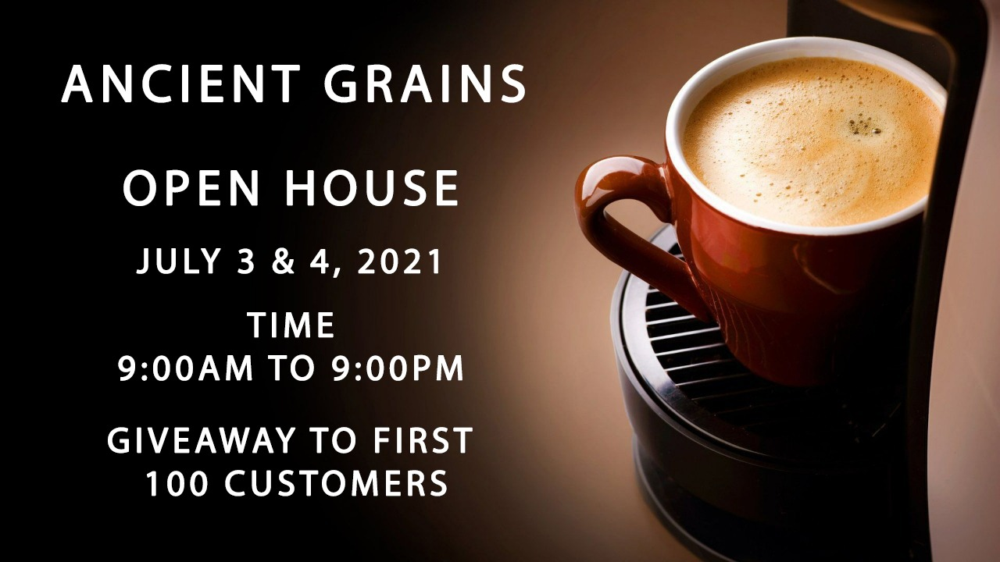
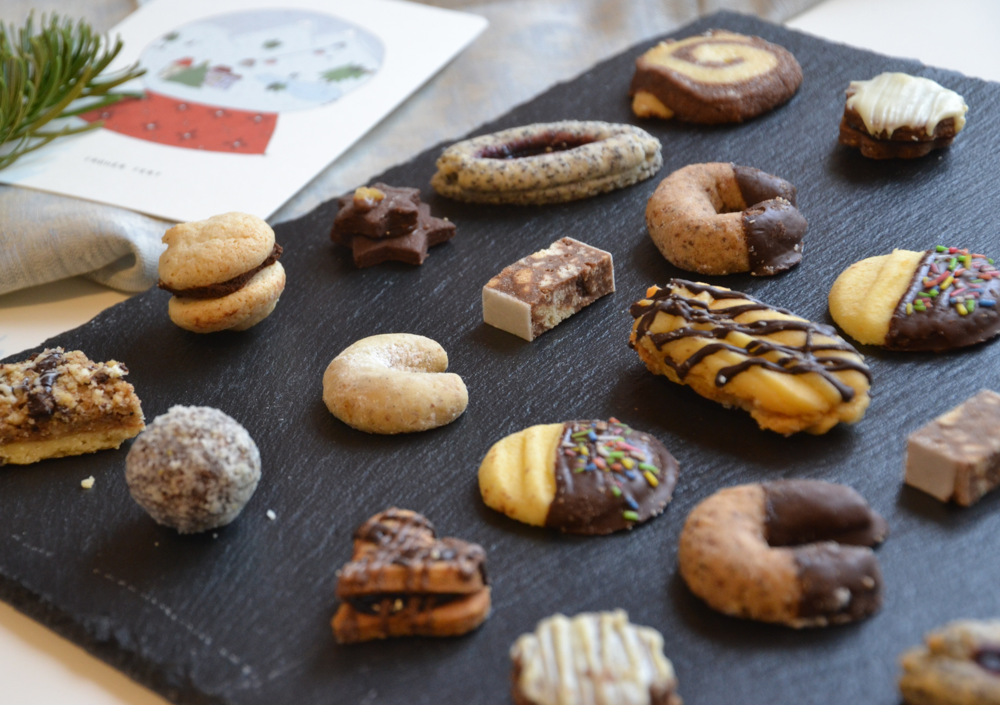

Welcome to Ancient Grains Bakery
Here you can find all kinds of european Ancient Grains' Bread, Buns, Rugelach, Vienna Coffee, 21 diffrent kinds of Pretsel, Gormet Coffee, Fine Rustle Coffee.
Open House
You are cordially invited to join Ancient Grains at our Open House which will take place
at 9:00 AM to 9:00 PM on 3rd & 4th JULY.
We are excited to introduce our bakery to the people of Cambridge.
Bakery Menu
Bakery products, which include diffrent kinds of Bread, Cakes, Rolls, Wraps, Cookies, Biscuits, Pies, Pastries and Muffins are usually prepared from flour or meal derived from some form of grain. Bread, already a common staple in prehistoric times, provides many nutrients in the human diet. Mocktails and Other Beverages.

Cup of Coffee
We roast coffee. Craft of coffee roasting is what we know the best. We demand the same levels of commitments to know-how from all of the people we woek with. The result of this mutual understanding is full-flavoured, balanced, easily recognizable taste of our coffees.